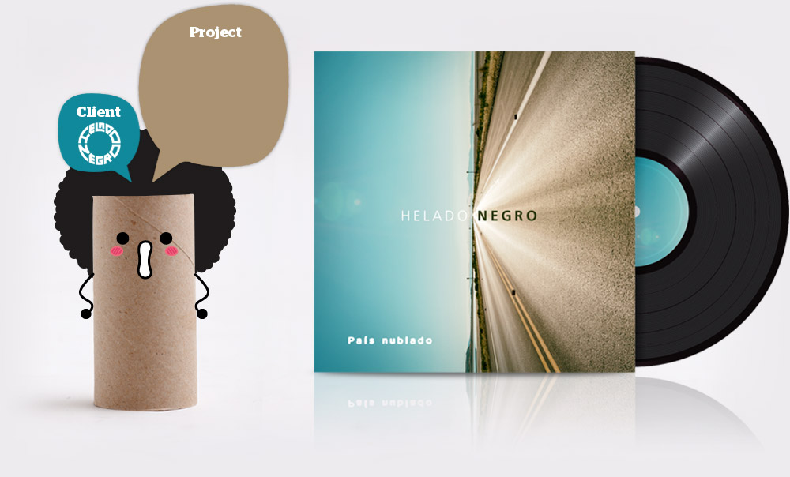
Cover for the single album "País Nublados". Who else than Helado Negro can use a picture of a sunny day to illustrate the cover of a single album called "Cloudy country"?
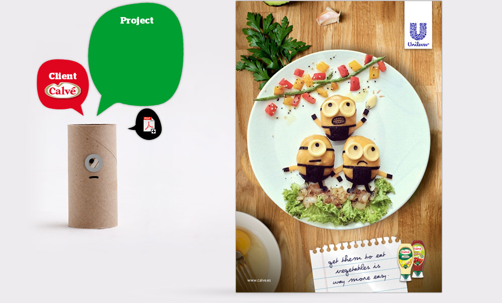
Print Ad
Our core target where moms. And moms do everything for their children, but they also want... some free time.
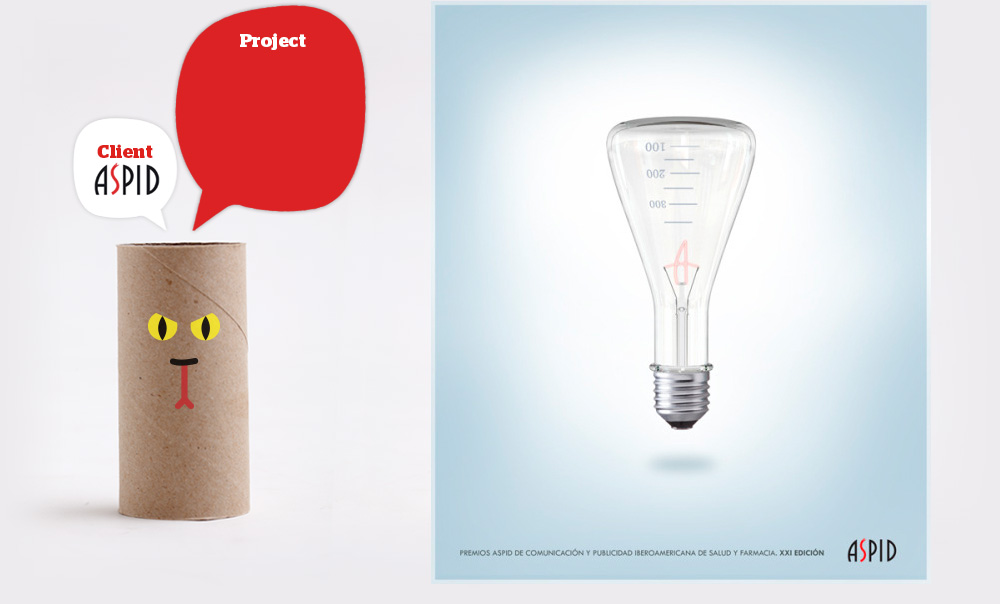
Poster
Every year the Iberoamerican Prizes of the Pharmaceutical and Health Industries organize a contest to choose their anual corporative image. With this proposal I won the 2016/2017 edition.
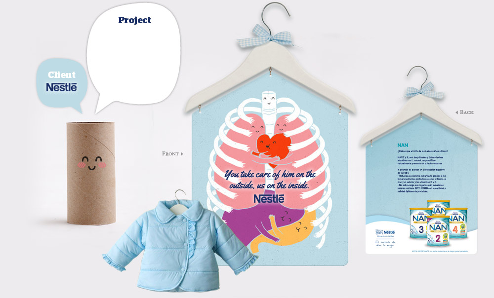
Supermarket ad
The idea is so clear, surprise moms hiding cute advertisments under baby clothes. This is just a sketch I did, but sadly the client rejected the idea.
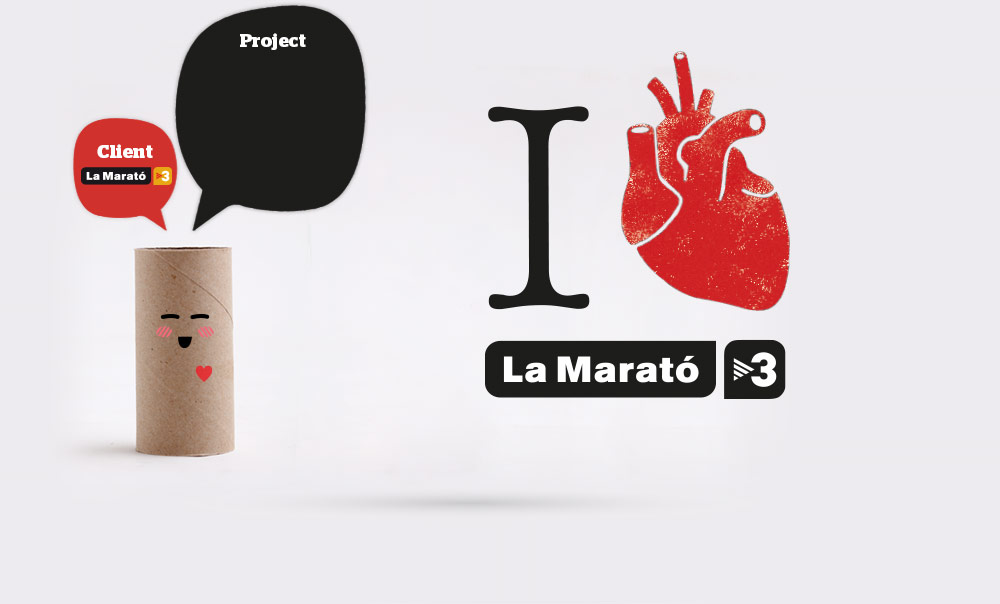
Key visual / Logo
"I love La Marató", Key visual for La Marató de TV3 (a charity event). This year dedicated to heart diseases.
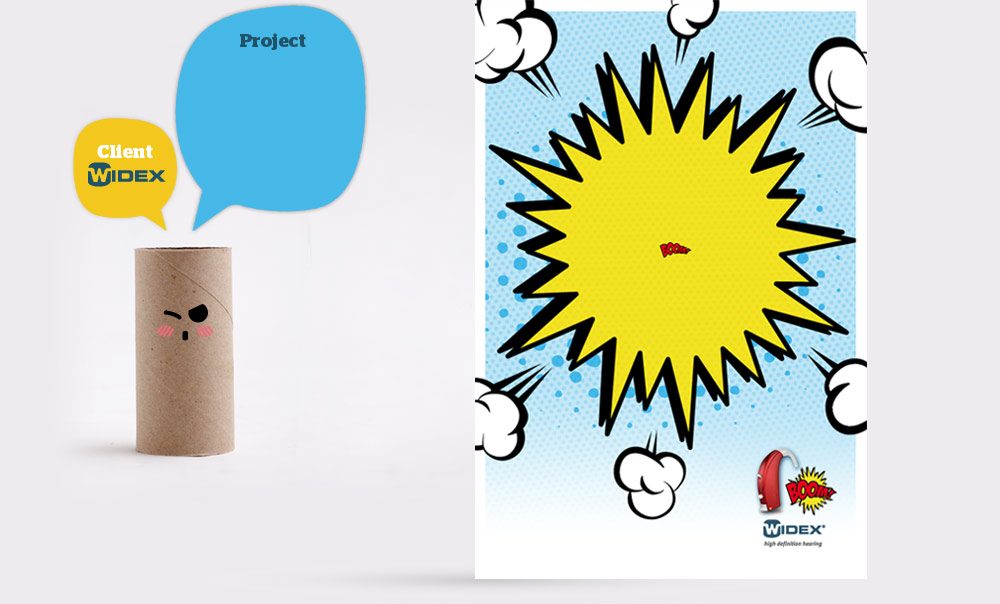
Print Ad
Widex is a manufacturer of hearing aid devices. This piece was made to advertise a colour full collection focused to impact to teenagers.
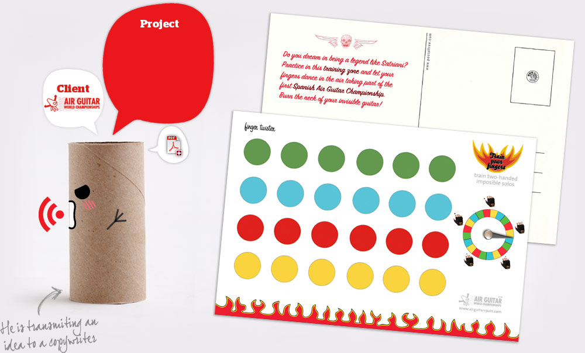
Postalfree
This campaignconsistsof threeinteractivepostalfree(seeattached PDF)designed as trainingzonestoprepare yourself for the nextspanish AirGuitar Championship.
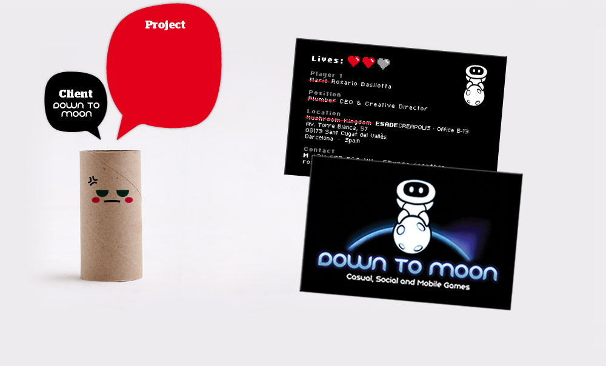
Business cards
Ok! Time to play finished, let’s work! What happend when a videogame company owner stops playing and goes to work? These business cards! There are Lara and Guybrush versions too.
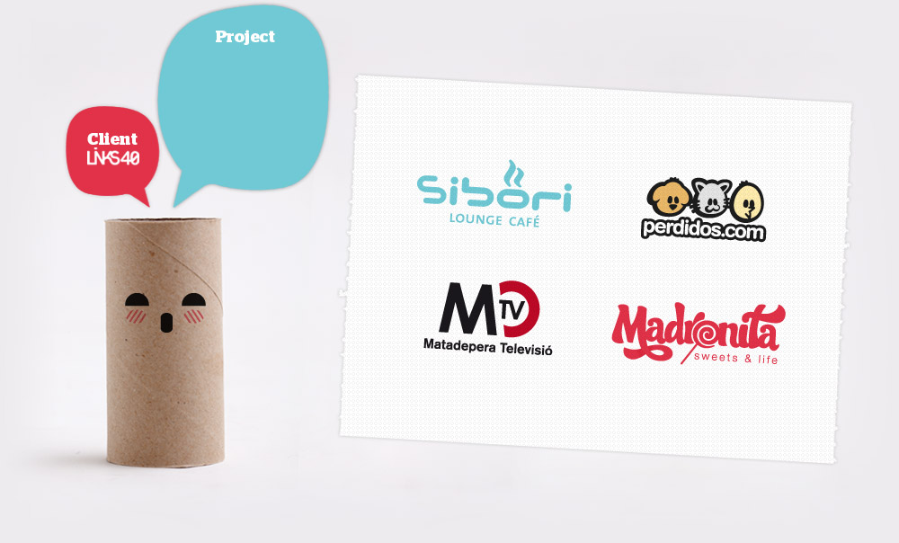
Logotypes
Some logotypes made at the Media Content Studio where I growed up as a professional, Links40.
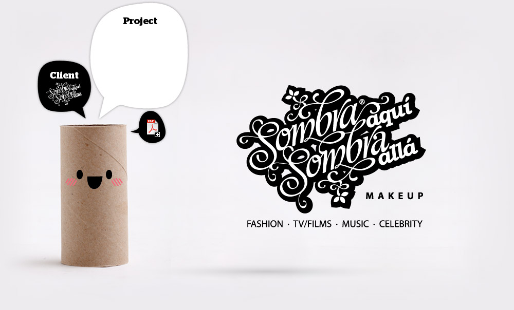
Naming · Logo · Stationery
Here the client was a makeup artist and Fashion designer from MAC. She gave me absolute freedom.
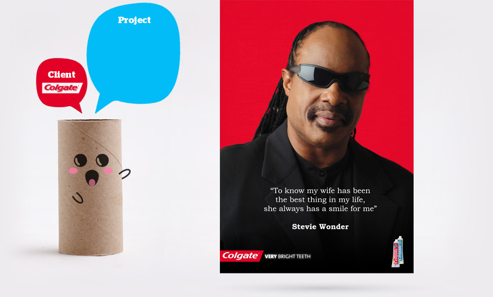
Magazine ad
Ad campaign to communicate the new Colgate Max White effect! It was followed by two more ads featuring José Feliciano and Ray Charles.
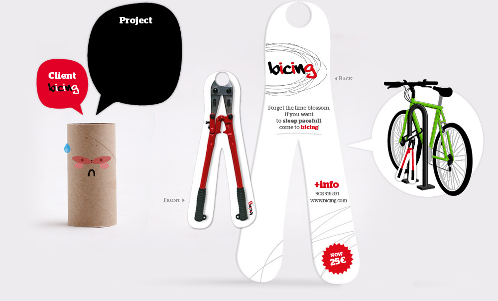
Ambient marketing
Cardboard display to advertise the Barcelona’s City Council bikes rent service. On this action we put shears at the locks of street parked bikes.
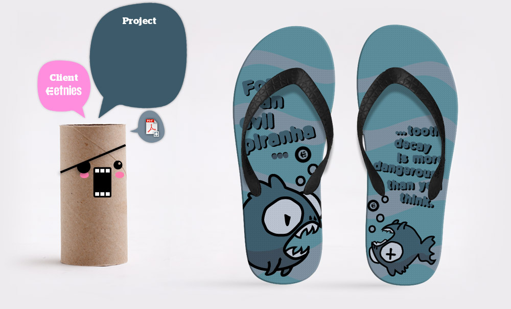
Sandals design
Three different proposals (see PDF) for El-Jefe Sandal Design Contest. You can read "For an evil piranha... tooth decay is more dangerous than you think".
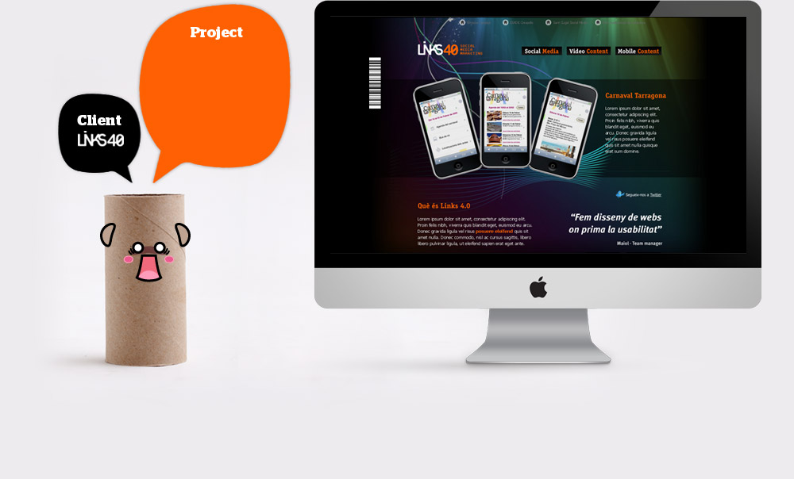
Website
Web design made for Links40, being the main designer of this company.
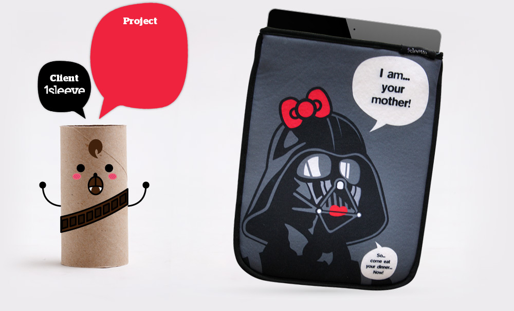
iPad sleeve
1Sleeve is a Catalan company that helps you made your iPad sleeve more personal. They wanted an idea/design for their first sleeves... and that’s the result.